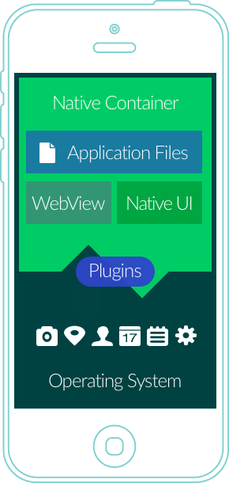
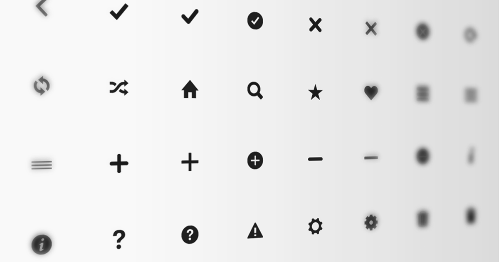
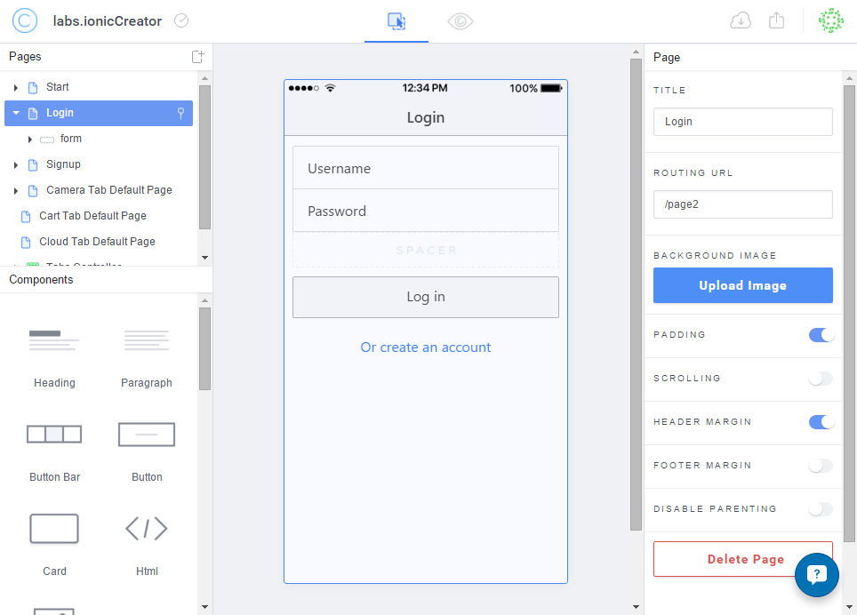
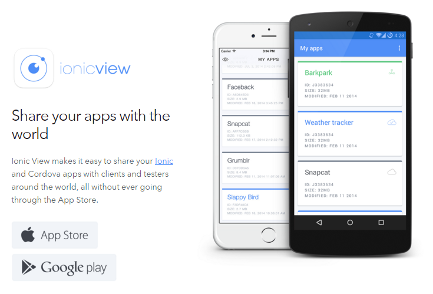
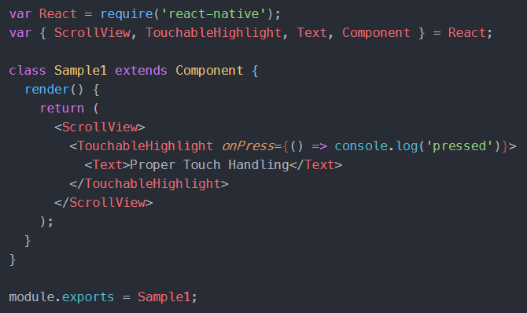
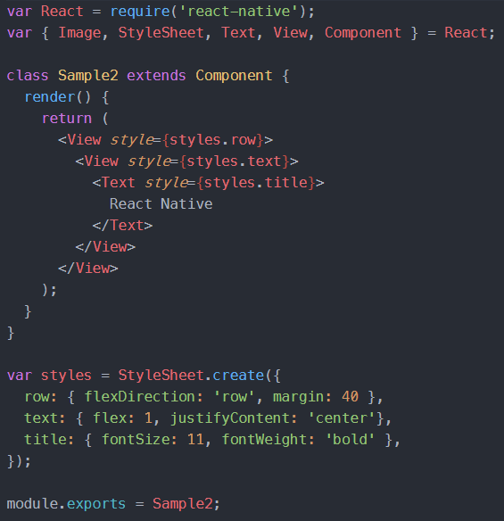

Hybridappar
Utveckla mobilappar i HTML, Javascript och CSS
Presenterat av Erik Tufvesson, Presis i Lund AB
Kort om mig
Erik Tufvesson
Systemarkitekt och utvecklare på Presis!
Brinner för utveckling av mobilappar!
Presentationen och all kod jag visar
idag finns tillgänglig på GitHub
Vad ska jag prata om idag?
- Vad är en hybridapp?
- Komma igång
- Val av ramverk
- Ionic Framework
- React Native
- Ionic2
Vad är en hybridapp?
- Består av både Native- och icke-Native-komponenter
- Vanligtvis en webbapp som visas i en inbyggd webbläsare (WebView)
- Kan kommunicera med telefonens mjukvara/hårdvara via plugins
- Utvecklas i HTML5/CSS3 och JavaScript
- Gemensam kodbas för Android/iOS
- Kompileras till ett installerarbart/distribuerbart paket
Komma igång
Android
Android Platform Guide (Cordova)
- Java Development Kit (JDK) 7+
- Android SDK (Android Studio)
- Android-emulator (t.ex. Genymotion)
iOS
- OSX
- Xcode
- iOS-emulator (npm install -g ios-sim)
Vilka ramverk finns det?
- Apache Cordova (tidigare PhoneGap)
- Ionic Framework
- Sencha Touch
- Appcelerator
- React Native (Facebook)
- NativeScript (Telerik)
- Xamarin (C#)
- ... och många fler
Paus för frågor
Ionic Framework
Ionic Framework
- Cordova
- AngularJS (v1.4)
- Byggt för att se ut och kännas som Native
- Fokus på enkelhet och prestanda
- Enkelt att kommunicera med Native plugins (ngCordova)
- Bra dokumentation
- Stor community
- Över en miljon appar byggda med Ionic
- Mogen kodbas (v1.0 lanserades maj 2015)
Hur fungerar Ionic?
- Angular Directives och Services
- UI Router
- ngCordova
(kommunicera med plugins) - Eget CLI
(Command Line Interface)
Ionic CLI
> # kör i din webbläsare
> ionic serve
> # lägg till en platform till din app
> ionic platform add [android|ios]
> # kompilera din kod till android/ios
> ionic build [android|ios]
> # starta din app i en emulator
> ionic emulate [android|ios]
> # kör din app på en fysisk enhet (telefon)
> ionic run [android|ios]
> # installera en plugin
> ionic plugin add ...
Sätta upp ett nytt projekt i Ionic
> npm install -g ionic cordova
> # installerar ionic och cordova globalt på din dator
> ionic start MyAwesomeApp
> # skapar upp en ny app med ett default-utseende
> cd MyAwesomeApp
> # en ny mapp skapas för appen
> ionic serve
> # startar upp appen i din webbläsare
Kodexempel
tab-cats.html

Kodexempel
cats.js
angular.module('app.cats', [])
.controller('CatsCtrl', function ($scope, Cats) {
Cats.get()
.then(function(cats) {
$scope.cats = cats;
});
})
.factory('Cats', function($http, $q) {
return {
get: function() {
var deferred = $q.defer();
$http.get('https://kittenapi.herokuapp.com/cats/hats/100')
.then(function(res) {
deferred.resolve(res.data);
});
return deferred.promise;
}
}
});
Android
iOS
Andra features i Ionic
Ionicons
Ikon-font med 700+ ikoner för både Android och iOS.
Ionic Resources
Skapa App-ikon och Splash screens mycket enkelt
- Skapa en bild (.png, .ai, .psd) för din ikon och en för din splash screen.
- Placera dem i mappen "resources" döpta till "icon.png" resp "splash.png".
- Kommandot nedan skalar om dina bilder till alla varianter du behöver.
> ionic resources
> # Klart!
Ionic Creator
Skapa design-mockups med drag-n-drop.
Ionic Lab
Desktop-app som hjälpmedel vid utveckling.
(Istället för att köra via kommandoprompten.)
Ionic View
Dela och testa din app utan att publicera den.

> ionic upload
> # Uploading app....
> # Saved app_id, ...
> # Successfully uploaded (0e7bf062)
> # Share your beautiful app with someone:
> ionic share your@email.com
Exempel på färdig app
WTHR (VÄDR)
Källkod: github.com/eriktufvesson/ionWeather
Play store: play.google.com/...se.presis.wthr
- Väderapp skriven i Ionic Framework
- Använder mobilens GPS för att hitta din position
- Hämtar väderdata från yr.no baserat på din position
- Använder Google Maps API för att hämta uppgifter om ortsnamn samt att söka efter andra orter
Paus för frågor
React Native

React Native
https://facebook.github.io/react-native/
- Byggt av Facebook
- React JS
- ES6/ES7
- Använder inte Cordova
- Ingen HTML
- React JSX kompileras till Native-element
- Logik körs i en egen tråd (JavaScriptCore)
- Inte 100% samma kodbas till iOS/Android
Sätta upp ett nytt projekt
> npm install -g react-native-cli
> # Installerar React Natives CLI globalt på din dator
> react-native init MyAwesomeReactNativeApp
> # Skapar upp en ny app med ett default-utseende
> cd MyAwesomeReactNativeApp
> # En ny mapp skapas för appen
> # Starta en emulator, t.ex. Genymotion, nu.
> # Alternativt anslut din telefon med USB.
> react-native start
> # Startar React Natives paketeringstjänst
> react-native run-android
> # Startar appen i emulatorn eller på din telefon
Kodexempel
React Native Component
Styling
- Delmängd av CSS
- Flexbox för positionering
Kodexempel
React Native Styling
DEMO
Paus för frågor
Ionic 2

Ionic 2
- Alpha release
- Angular 2
- Webpack
- Förbättrad prestanda
- Material Design för Android
- ES6/TypeScript
Sätta upp ett nytt projekt
> npm install -g ionic@alpha
> # installerar ionic (v1 och v2) globalt på din dator
> ionic start MyAwesomeIonic2App --v2
> # skapar upp en ny app med ett default-utseende
> cd MyAwesomeIonic2App
> # en ny mapp skapas för appen
> ionic serve
> # startar appen i din webbläsare
Kodexempel
Ionic 2 - cats.html
<ion-navbar *navbar primary>
<ion-title>Funny Cats</ion-title>
</ion-navbar>
<ion-content padding>
<div *ng-for="#cat of cats">
<img [src]="cat.url" alt="Cat">
<button primary (click)="viewCat(cat)">
<icon eye></icon>
</button>
</div>
</ion-content>
Kodexempel
Ionic 2 - cats.js
import {Page, NavController} from 'ionic/ionic';
import {Http} from 'angular2/http';
import {CatDetail} from '../cat-detail/cat-detail';
@Page({ templateUrl: 'app/cats/cats.html' })
export class Cats {
constructor(http: Http, nav: NavController) {
this.nav = nav;
this.http = http;
this.cats = [];
}
onInit() {
this.http.get('https://kittenapi.herokuapp.com/cats/funny/100')
.map(res => res.json())
.subscribe(data => { this.cats = data; });
}
viewCat(cat) {
this.nav.push(CatDetail, {cat: cat});
}
}
Android
iOS
Ionic 2 CLI
Alla funktioner från Ionic v1
+
> # Lägg till en ny sida i din app
> ionic generate page min-sida
> # Skapar en ny mapp med ett nytt skal för en sida
> # - app
> # --- min-sida
> # ----- min-sida.html
> # ----- min-sida.js
> # ----- min-sida.scss
Tips för debugging
Aktivera Source Maps i Webpack
// webpack.config.js
...
module.exports = {
entry: [...],
output: {...},
module: {...},
resolve: {...},
sassLoader: {...},
/* Add this line */
devtool: 'source-map'
};
Kom ihåg
Ionic 2 är fortfarande Alpha
Mycket saknas och annat kan ändras innan det är färdigt för produktion
Paus för frågor
Rekommenderade länkar
- Ionic Framework
- React Native
- Ionic 2